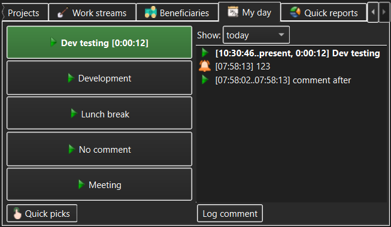

The My Day view is where users will probably spend most of their TimeTracker3 time. It is where a user can quickly start/stop recording the daily activities and see what has been achieved during the day so far.

The My Day view is divided into two equal parts = the Quick Picks list on the left and the Daily Log on the right.
Although the same user may work in a large variety of projects and tasks over time, it is usually the case that for smaller time periods (weeks or even months) the number of tasks the user performs is relatively small (such as the user's currently assigned project), while some things (such as meetings or lunch breaks) will always be a part of daily/weekly activities.
To facilitate the easy switch from recording one such task to the next, each Account of a User is associated with the Quick Picks list. This is the list of Tasks and Activities that the user most expects to see in the day-to-day routine. This Quick Picks list is configured once; after this is dome, the My Day view allows starting or stopping the recording of a task or activity with a single mouse click (or, if the user's PC has a touch screen, a single touch).
While recording a task or activity assigned to the Quick Picks list, the corresponding button will be highlighted and the duration recorded so far will be shown alongside it. To stop the task or activity that is currently being recorded user only needs to click (or touch) the corresponding button again.
This lists all activities and tasks the user has recorded so far, starting with the most recent (or currently being recorded) one at the top of the list and going backward chronologically. The drop-down list above the Daily Log allows the user to choose how much of the recent daily history they want to see, while the Log Comment button below the Daily Log allows the user to enter an arbitrary comment that is recorded into the Daily Log as an event (entering a comment does not stop or interrupt any task or activity currently being recorded).
Entries can be deleted from the Daily Log by using the context menu on individual Daily Log entries and choosing the appropriate "delete" command from the context menu that pops up; however, it is strongly recommended that this is not done, as the historical record of the daily work will suffer as a result.
See also: Manage Quick Picks dialog